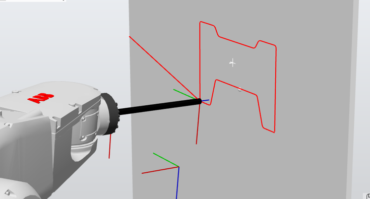
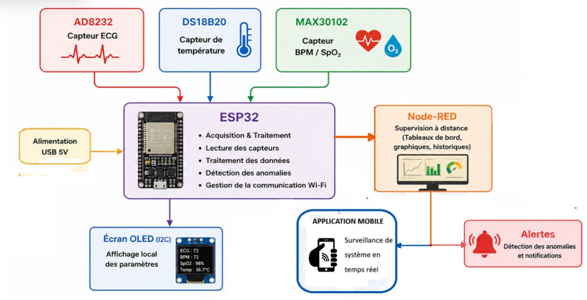
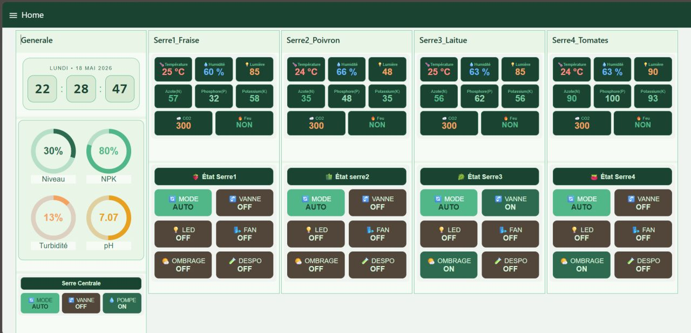
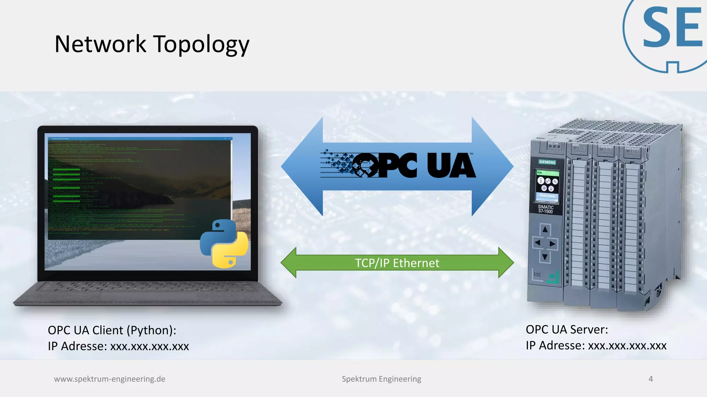
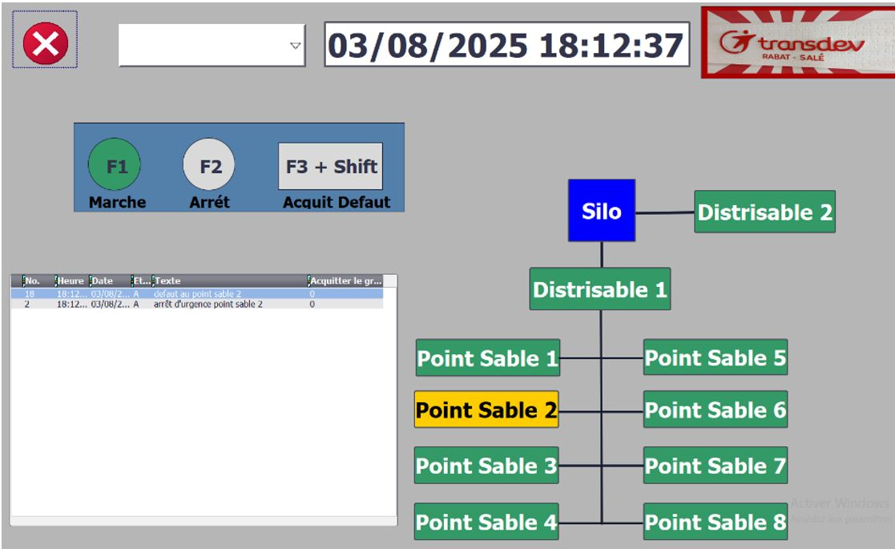
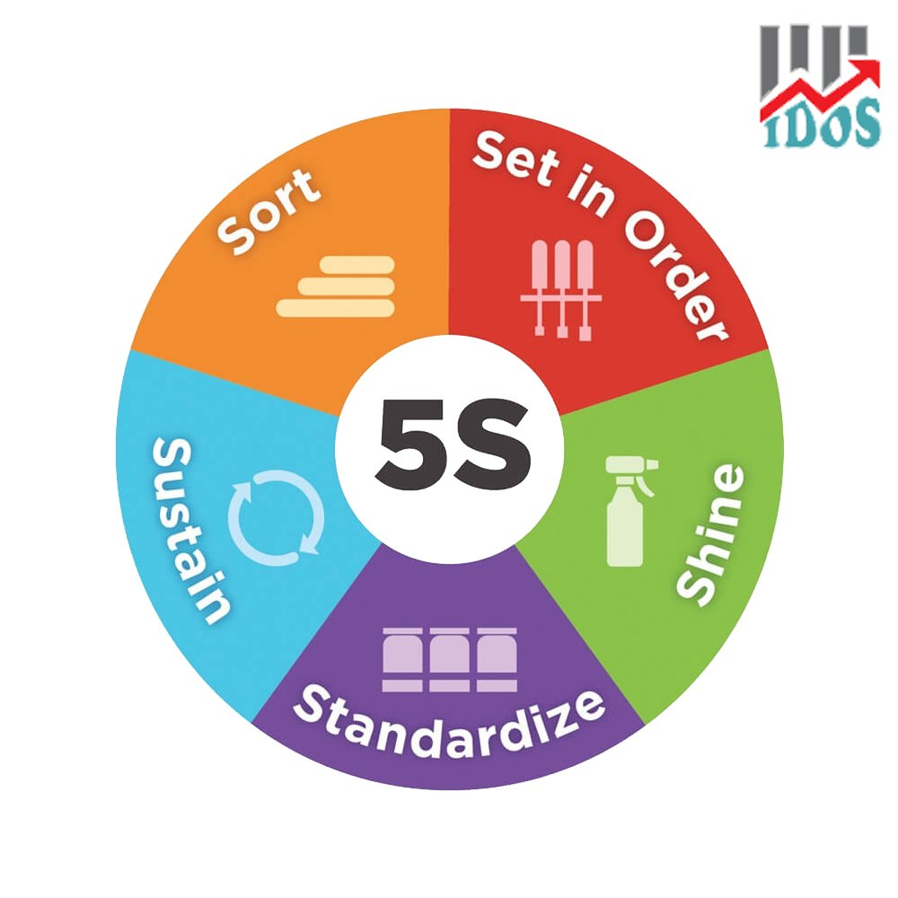
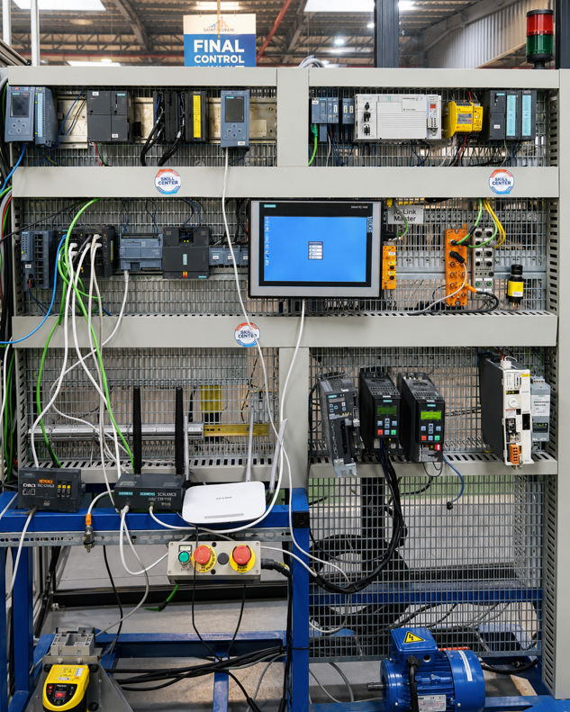
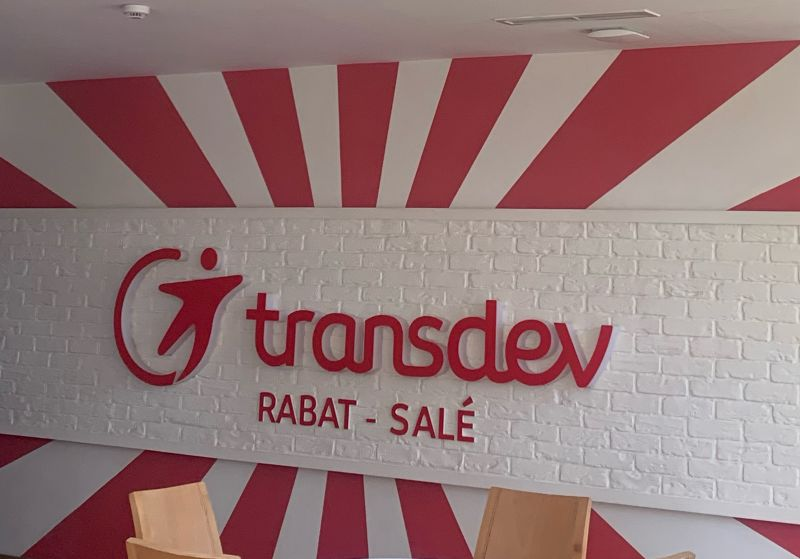

TIA Portal, STEP 7, PLCSIM, WinCC, LAD, SCL, MPI, PUT/GET
ELECTRICAL ENGINEERING • AUTOMATION • ROBOTICS
Engineering student interested in automation, robotics, embedded systems and industrial technologies.
See my projects LinkedIn01 / ABOUT
I am an Electrical Engineering and Industrial Automation student at EMSI in Salé. Through academic projects and internships, I have developed practical experience with PLCs, robotics, embedded systems, industrial communication and programming.
I am still learning and building my skills through hands-on projects, simulations and industrial experience.
02 / SKILLS
TIA Portal, STEP 7, PLCSIM, WinCC, LAD, SCL, MPI, PUT/GET
ABB RobotStudio, IRC5, RAPID, robot trajectories and simulation
OPC UA, MQTT, TCP/IP, industrial data exchange
Python, C, Ladder, GRAFCET, SCL, RAPID, Raspberry Pi
ESP32, Arduino IDE, Proteus, Node-RED
MATLAB, CATIA, functional analysis, 5S and ergonomics
03 / PROJECTS

01 • ROBOTICSObjective: Simulate an ABB robot performing an industrial marking operation.
Technologies: RobotStudio, IRC5, RAPID, MoveJ, MoveL.
My work: Programmed trajectories, positions and robot movements.
Result: Tested and validated the marking sequence in simulation.

02 • PFA / IoMTObjective: Develop a connected prototype for physiological monitoring.
Technologies: ESP32, C/C++, MQTT, Python, Node-RED, Android, Proteus.
My work: Worked on sensor acquisition, embedded programming, communication and supervision.
Result: Tested monitoring of ECG, temperature, BPM and SpO₂.

03 • IoTObjective: Monitor and control four connected greenhouses.
Technologies: ESP32, MQTT, Python, Node-RED, Proteus.
My work: Worked on monitoring, communication and centralized irrigation/nutrient management.
Result: Simulated a connected smart-farming system.

04 • COMMUNICATIONObjective: Study industrial data exchange with a PC application.
Technologies: OPC UA, Python, asyncua.
My work: Worked on OPC UA client/server communication and industrial variables.
Result: Tested PC-side access to structured industrial data.

05 • PLC / HMIObjective: Develop and simulate industrial control sequences.
Technologies: TIA Portal, STEP 7, PLCSIM, WinCC, LAD, SCL, MPI, PUT/GET.
My work: Programmed sequences, HMI screens and PLC communication.
Result: Tested simulated automation cycles.

06 • INTERNSHIPObjective: Improve workstation organization and accessibility.
Technologies: 5S, ergonomics, spaghetti diagram, functional analysis.
My work: Observed movements and worked on storage and equipment arrangement.
Result: Contributed to a more organized and pleasant work area.
04 / EXPERIENCE

2026Student internship around industrial automation, Siemens PLCs, ABB robotics, scanner integration, OPC UA communication and workstation improvement.

INTERNSHIPStudent internship in a real technical environment, giving me practical exposure to engineering operations and maintenance.
05 / CONTACT
For an internship, project or professional discussion.
LinkedInEmailor write to abdelkrimelfassi2004@gmail.com